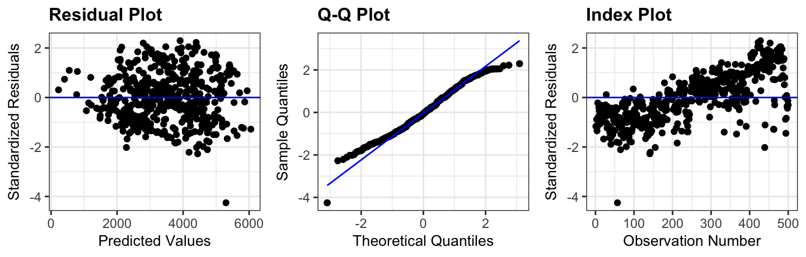

Today we’re building an explanatory model. (Predictive models come after the quiz!)
Which variables would you include to answer our question? Why?
A recipe for explanatory models
Start with the question. Which variables are you interested in? Which do you need to adjust for? These stay in the model, even if ___________________________
Look before you fit. Check for predictors that ___________________________
Fit a small set of candidate models (not every possible combination!)
Compare the candidates: ______________ for nested models; ______________ for any models
(b) Use an \(F\) test to compare M3 to M2. State \(d\) and \(df_{full}\). (reminder: \(F = \frac{(SSE_{reduced} - SSE_{full}) / d}{SSE_{full} / df_{full}}\))
(c) Do the two tools agree? Which model would you choose?
Step 4: Compare all of our candidates
TipActivity
Work through Parts 1-3 of the R activity and record your results here.
Model
\(k\)
\(R^2_{adj}\)
AIC
BIC
A: temp_actual + windspeed + weekend
B: A + holiday
C: B + humidity
D: C + temp_feel
E: temp_feel + humidity + weekend + holiday
Which model would you choose to answer our question? Justify your choice.
ImportantStop here
Let Amanda know when your group finishes!
Steps 5 and 6: Check and interpret

term
estimate
conf.low
conf.high
weekendTRUE
-777
-1000
-554
holidayyes
-1093
-1751
-435
Example: Using model C, answer our question in context.
Comparing two models
graph TD
classDef default fill:#e8f5e9,stroke:#2e7d32,stroke-width:2px,color:#1b5e20;
A(["Are the models nested?"])
B(["Do they differ by<br>one coefficient?"])
C["t-test for that coefficient<br>(same as the F test)"]
D["Extra sums of squares F test<br>anova(reduced, full)"]
E["Adjusted R², AIC, or BIC<br>(no p-value)"]
F["If the tools disagree,<br>choose the simpler model"]
A -->|YES| B
A -->|NO| E
B -->|YES| C
B -->|NO| D
C --> F
D --> F
E --> F
Summary
Tool
Nested only?
Gives a p-value?
Notes
\(F\) test
Adjusted \(R^2\)
AIC
BIC
Use domain knowledge first. These tools compare candidate models; they don’t replace thinking.